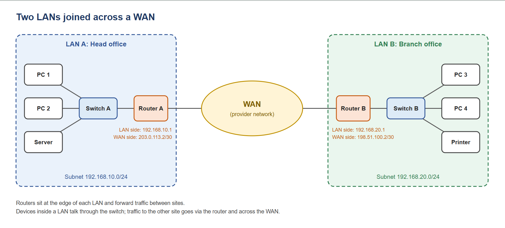

2. LAN vs WAN
2.1 What is a LAN?
A LAN (local area network) is a network that connects devices within a limited area, such as a home, an office, a school building or a single site. The organisation that uses it normally owns and manages the whole thing, including the cabling, switches and wireless access points, so it doesn't depend on an outside provider to carry traffic between its own devices. That ownership also means the owner decides how the network is addressed, segmented and secured.
Geographically, a LAN covers a small area, from a single room up to a building or campus. A copper Ethernet cable run is limited to about 100 metres1, and larger sites extend this by chaining switches or using fibre between buildings. Because distances are short and the owner controls the equipment, a LAN is fast and has very low latency. Wired connections typically run at 1 Gbps to devices, with 10 Gbps or more between switches and to servers, while Wi-Fi is usually slower and varies with signal and the number of users.
The typical devices on a LAN are end devices such as PCs, laptops, phones, printers and servers; switches that connect wired devices; wireless access points that connect Wi-Fi devices; and a router at the edge that links the LAN to other networks. In Figure 1, LAN A and LAN B each show this pattern: devices connect through a switch and a router at the boundary is the way out of the LAN.
2.2 What is a WAN?
A WAN (wide area network) connects separate networks across a large geographic distance, such as offices in different towns, or a site and the internet. Where a LAN joins devices, a WAN joins LANs. In Figure 1, the WAN is the link between Router A and Router B and each LAN's router is the point where traffic leaves one network and enters the other.
Unlike a LAN, an organisation rarely owns the infrastructure a WAN runs over. The cables, exchanges and long-distance links are normally owned by telecoms providers and ISPs, and the organisation rents the connection from them. Common options include leased lines (a dedicated private link), broadband or fibre connections over the internet, and managed services such as MPLS or SD-WAN. Because the traffic crosses networks the organisation doesn't control, WANs generally have higher latency than LANs, speeds that depend on what is paid for, and more exposure to outages and security risks outside the owner's hands.
Three technologies make a WAN work in practice. Routers sit at the edge of each LAN and forward packets between sites using IP addresses and routing tables. NAT (network address translation) lets devices with private addresses, such as 192.168.10.x, reach the internet by translating them to a public address at the edge, because private ranges are not routable across the internet. VPNs (virtual private networks) create an encrypted tunnel across a public network, so two sites or a remote worker can communicate as if on a private link without paying for dedicated circuits.
2.3 Comparison
| Aspect | LAN | WAN |
|---|---|---|
| Typical scope / geography | A segregated area such as a room, school or office building. | A large area, connecting sites across cities or even continents – the internet is the largest example. |
| Who owns the infrastructure | Usually owned or managed by the individual / institution, or an organisation using it, including switches, cables and wifi access points. | Usually uses infrastructure owned or provided by ISPs, telecom carriers or cloud providers. Organisations often lease the connection. |
| Typical speed and latency | Usually very fast; often 1–10 Gbps on wired networks and has very low latency, often under 1 ms. | Speed depends on service or link commonly from around 1 Mbps to 10 Gbps; latency is higher, often tens to hundreds of milliseconds because data travels farther through more equipment. |
| Key devices | Switches, wireless access points, routers, ethernet cables, computers, printers and servers. | Routers, modems, gateways, leased lines, fibre links, satellite or mobile connections and carrier network equipment. |
| Example | A wifi and wired network connecting laptops, printers, and a server within one school building. | A company using fibre or ISP connection to link its London office to its Manchester office or a home network connecting to the internet. |
2.4 Diagram

Figure 1: Two LANs (Head office and Branch office) connected across a WAN. Each LAN has its own subnet and switch, and a router at its edge forwards traffic between sites.
2.5 Where the OSI model fits
The OSI2 model splits networking into seven layers, and a network device is defined mostly by which layer's information it uses to make decisions. A device reads the header added at its own layer and treats everything inside as payload. That is why switches, routers and firewalls behave so differently even though all of them pass traffic along.
| Device | Main OSI layer | What it looks at | Why it works at this layer |
|---|---|---|---|
| Switch | Layer 2 (Data Link) | Destination MAC address in the Ethernet frame (and the VLAN tag, if present) | Its job is to move frames between devices on the same LAN, so MAC addresses are all it needs. It keeps a table of which MAC address is on which port. VLANs are also a Layer 2 feature (see 3.1). |
| Router | Layer 3 (Network) | Destination IP address in the packet | Its job is to connect different networks, so it needs IP addresses and a routing table to choose the next hop. This is what joins subnets, VLANs and LANs across a WAN (see 3.5). |
| Firewall | Layers 3 and 4 (traditional); up to Layer 7 (next generation) | IP addresses, ports and connection state; newer firewalls also inspect the application itself | Its job is to decide what may cross a boundary. A stateful firewall tracks connections using IPs and ports (Layers 3 and 4), while a next-generation firewall can identify applications and users at Layer 7. |